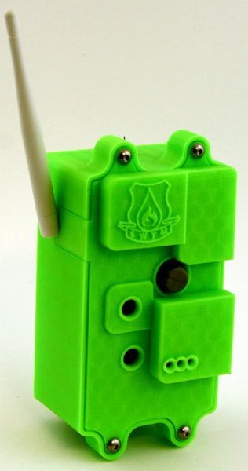
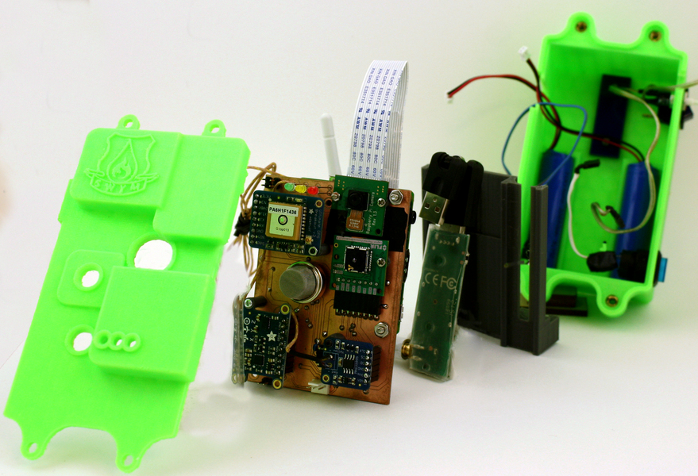

Dalmatian
How can we make firefighters safer?

Dalmatian was a technology startup focused on answer the question of how we can make firefighters safer in the hectic environment of an active emergency. We created Helios
Team
Mitchell Karchemsky
Will Porter
Simon Scott
Yi Tong
My Role
Initial Prototyping
Idea Exploration
Product Manufacturing
Embedded System Design
Methods
Prototyping
eagleCAD
Sketching
3D CAD
Software Programming
Dalmatian
In the Fall of 2016, I enrolled in the class “Interactive Device Design” with Björn Hartmann and took on the project of creating better response technology for emergency personnel. We interviewed with firefighters all around the San Francisco Bay Area, and we found that the hardest part of their job was communication.
We understood that only about 20% of radio communications are fully understood between both parties: the incident commander who handles the situation from a van outside the scene, and the firefighter on the scene.
Verbal communication in an area where air currents get highly modulated due to fire creates an almost impossible situation for microphones to pick up verbal calls. We found that most of the work that the firefighter does, they are trained for: there is no real question of what they are supposed to do when they arrive on the scene. The main issue is personnel management and safety from an incident commanders perspective.
To answer all the problems/goals, we wanted to create a device which would not directly interfere with the firefighters active duties, but at the same time, provided critical information to the the incident commander.

Utilizing a multitude of sensors, we are able to give a personal biometric bubble for each firefighter on the scene. Our device collected ambient temperature, gps position, acceleration/movement, accurate oxygen tank level, compass direction, HD Video, as well as Thermal Video. All of this information gets transmitted to a central computer stationed in the back of the incident commanders van (they already use a van which has a variety of documents and radios) where they would use a touch screen user interface to actively see the positions as well as critical information for each responder. The system was designed with smart alerts (oxygen running low, ambient temperature too high, etc) as well as an easy information explorer.

The device was built from the ground up with around the Raspberry pi A+ and tying all the sensors in between with custom firmware, custom hardware, and custom software.
At the end of the class, we won the best project award among the other class projects. We received a lot of interest from fire departments and hardware incubators so another project partner and I took the project as an opportunity to explore the idea as a startup concept. We spent the next 9 months together turning the project into a company. We ended up working with Berkeley, San Mateo, Richmond, and Oakland Fire Departments to tailor to their needs and we received a lot of interest in making the product a reality. We won a design competition for $20,000 in funding, as well as other prizes.
You can read more about it here in this press release
Due to personal matters, my partner and I decided to put the company on hold.
Case Studies
Selected Works

Bifröst
Better Embedded Systems Debugging
Berkeley Institute of Design. How do we better instrument embedded systems for combined software and hardware debugging?
Read Me
Dalmatian
How can we make firefighters safer?
Technology startup focused on creating a safer more effective workforce for firefighters through the use of on-person telemetry units.
Read Me
Heimdall
Remote debugging of embedded systems
Berkeley Institute of Design. How do we enable remote intuitive debugging for teachers to help beginners design embedded systems projects?
Read Me
Wifröst
Wi-Fi Embedded Systems Debugging
Berkeley Institute of Design. How do we use instrumented hardware to better debug network enabled IOT embedded systems?
Read Me
Within2
How do we create music we can feel?
Collaboration with Meyer Sound, The Berkeley Center for New Media, and Artist Tarek Atoui. How do we create music for the hearing impaired?
Read Me
MakerPass
Hardware and Industrial Design
The MakerPass Authentication system allows for Maker-spaces to grant access to privilaged members in a low-cost, easy to implement solution.
Read Me
Doom Sense
How can we feel information?
An experiment in haptic feedback modalities and sensory extension. We improved the performance of a player by delivering curated contextual information
Read Me
Drill Sergeant
Hardware and Industrial Design
Berkeley Institute of Design. Drill Sergeant enables new makers to build confidence through self-guided interactive physical feedback driven tutorials.
Read MeTeaching Experience
Courses and Mentorship

Critical Practices
Teaching Assistant
A hands-on, studio design course where students work at the intersection of technological innovation and socially engaged art.
Read Me
Design Innovation 22
Teaching Assistant
This introductory design course teaches concepts, skills, and methods required to design, prototype, and fabricate physical objects.
Read Me
Invention Lab
Technical Design Mentor
The Invention Lab is a UC Berkeley makerspace focused on helping students, researchers, and faculty to make embedded systems inventions.
Read Me